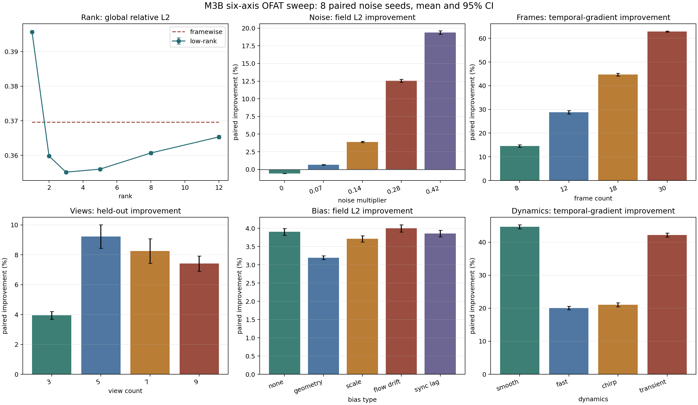
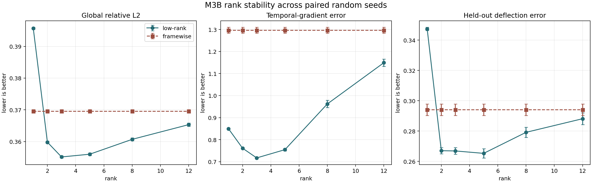
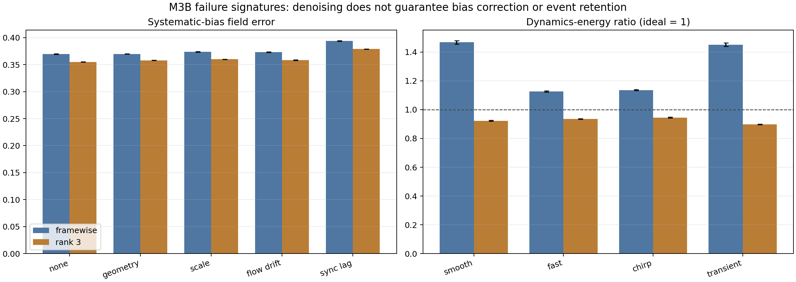

{kind=link}
{kind=link}
{kind=link}
低秩有噪声门槛
noise=0 时 L2 恶化 0.56%；0.07 后才转正，0.42 时改善 19.39%。它是 denoiser，不是免费精度。
把单次 rank 演示升级为 8 个配对随机种子的单因素实验：rank、位移噪声、帧数、视角数、系统偏差与动力学。它回答的不是“低秩一定更好”，而是在哪些条件下去抖收益可信，哪些物理量会被平滑掩盖。
默认条件下，rank 3 让全局 norm-ratio L2 改善 3.90%、论文式 squared L2 改善 7.65%、时间一阶/二阶误差改善 44.68% / 73.19%、held-out deflection 改善 9.23%。但 mass trace RMSE 反而恶化 0.94%：低秩明显会去抖，却不保证积分量、幅值和系统误差正确。
六轴 OFAT 用来发现值得继续追的变量；rank × noise × views × dynamics 交叉实验进一步覆盖 80 个环境、8 个配对种子和 3,200 组配对比较。随后完成的跨形态无真值 selector又扩展到 864 个观测格、4 个 morphology family 和 full-rank 拒绝平滑，证明固定 rank 的主要风险来自 morphology mismatch，并把无 held-out mean regret 压到 0.252%。
| 轴 | 水平 | 固定条件 | 主要回答 |
|---|---|---|---|
| Rank | 1 / 2 / 3 / 5 / 8 / 12 | 5 views、18 frames、noise 0.14 | 容量、去噪、运动和重投影如何冲突。 |
| Noise | 0 / 0.07 / 0.14 / 0.28 / 0.42 | rank 3 | 低秩从哪个噪声区间开始真正有益。 |
| Frames | 8 / 12 / 18 / 30 | rank 3、同一完整运动周期 | 时间采样增多时去抖收益怎样变化。 |
| Views | 3 / 5 / 7 / 9 | rank 3、独立 held-out angle | 时序低秩能否稳定未参与重构的投影视角。 |
| Bias | none / 2° geometry / scale / flow drift / 1-frame lag | noise 0.14 | 随机去噪是否会被误读成系统误差校正。 |
| Dynamics | smooth / fast / chirp / transient | rank 3 | 快速、变频和突发结构会否被过度平滑。 |
OFAT 单因素扫描不是完整六维全因子95% CI = 1.96·s/√8同 seed 配对比较
点击一个实验轴，查看最强证据、失败边界和下一步动作。
rank 1 过度压缩，rank 12 接近逐帧噪声；rank 3 同时给出最低全局 L2 和较好的 held-out 误差。



| 指标 | Framewise | Rank 3 | 配对变化 | 研究含义 |
|---|---|---|---|---|
| Global relative L2 | 0.3696 | 0.3551 | +3.90% | 整体场误差小幅、稳定下降。 |
| Paper-style squared L2 | 0.1366 | 0.1261 | +7.65% | 与 TOG Eq. 24 同类定义，但仍不是同一数据/方法，不能横向比数值。 |
| Temporal-gradient error | 1.2967 | 0.7172 | +44.68% | 去除逐帧随机抖动是最强收益。 |
| Temporal-curvature error | 3.3357 | 0.8938 | +73.19% | 二阶时间抖动被显著压制。 |
| Dynamics-energy ratio | 1.4679 | 0.9230 | 更接近 1 | framewise 被噪声放大；rank 3 略微过度平滑。 |
| Centroid RMSE | 0.06935 | 0.06734 | +2.90% | 运动追踪只小幅改善，不足以证明系统偏差已消失。 |
| Mass-trace RMSE | 0.15707 | 0.15854 | -0.94% | 积分量变差，是“平滑但未必物理正确”的直接证据。 |
| Held-out deflection L2 | 0.2941 | 0.2669 | +9.23% | 对未参与重构的角度有一定泛化收益。 |
noise=0 时 L2 恶化 0.56%；0.07 后才转正，0.42 时改善 19.39%。它是 denoiser，不是免费精度。
时间梯度改善从 8 帧的 14.58% 增至 30 帧的 62.84%；但仍需固定真实采样率后验证。
held-out 改善为 3/5/7/9 views = 3.95/9.23/8.25/7.41%。这提示 rank×view 交互，而不是“5 视角最好”。
sync lag 的场误差 0.3941→0.3789，仍是五种 bias 中最差。去抖无法替代同步和几何校正。
smooth 的时间梯度改善 44.68%，fast/chirp 只有 20.06%/21.06%。固定 rank 对更复杂动力学更吃力。
transient 的 low-rank 动力学能量比为 0.898。它比噪声膨胀结果更接近 1，但仍损失约一成真实变化。
本页是 24×24×10 小体积、单因素、简化直线投影的 synthetic screening experiment。bias 注入是可解释故障签名，不是 OERF 相机/光纤束的标定模型；置信区间只覆盖 8 个噪声种子。后续页面已经补上 rank/noise/views/dynamics 联动、四类 synthetic morphology 和无真值 selector，但仍未补真实几何、bias magnitude、sampling rate、曝光模糊与真实数据；三页都不能支持“已复现 TDBOST”。